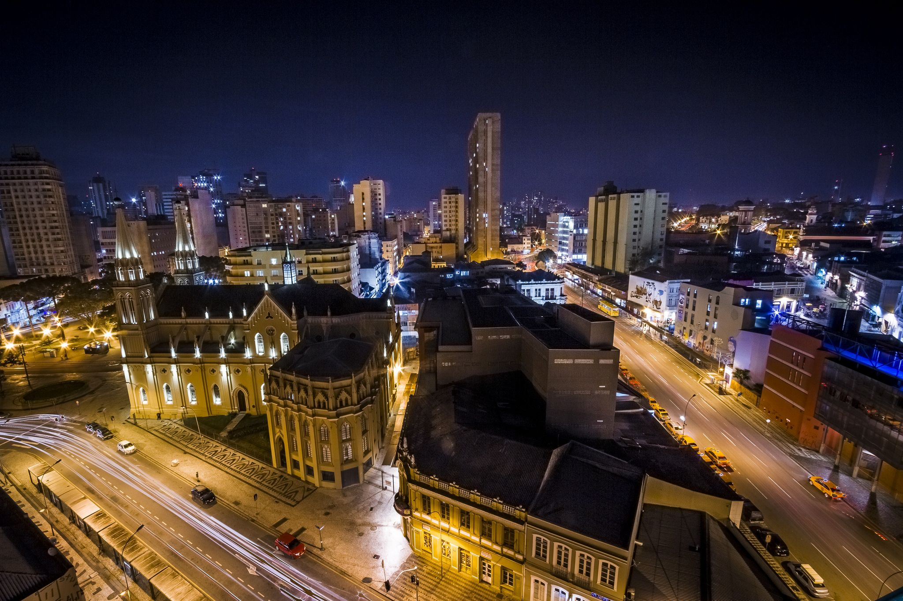
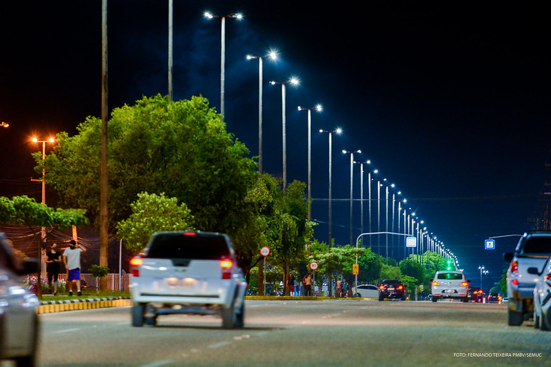
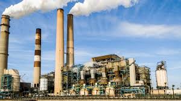

💡 Energia que vem do campo
Muitas cidades recebem energia elétrica gerada em áreas rurais, seja por hidrelétricas, parques eólicos ou solares. O campo ilumina a cidade!


🌃 Segurança e mobilidade
A iluminação urbana garante mais segurança, facilita o transporte noturno e permite que a vida nas cidades continue ativa após o pôr do sol.
⚡ Conexão campo-cidade
A energia gerada no campo é essencial para a infraestrutura urbana: sem ela, hospitais, escolas e indústrias não funcionariam com eficiência.
